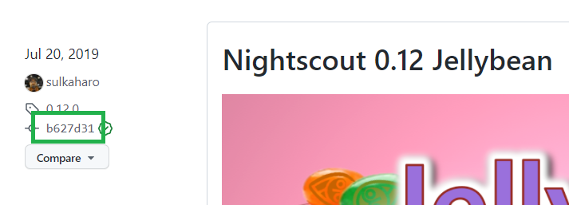

Downgrade Nightscout
There is usually no good reason to downgrade Nightscout unless being instructed to do so.
First try to deploy another version if available: see Deploy another version.
If you use Heroku and you want to return to the previous version, see Roll back Heroku.
Deploy an old release
Docker
You deployed a Docker container: you’re not using GitHub (Azure, Northflank, Railway, Render) use this method.
GitHub
You forked Nightscout in your own GitHub account and used it to deploy.
Experienced users only - not recommended
Deploying an archived release of Nightscout is complex and involves using Git on your computer (You need to install git if you’re using a Windows computer).
Before starting you need to have the project nightscout/cgm-remote-monitor forked in your GitHub repository, with not only the master fork copied (look out for the check box!). It is recommended to redeploy paying attention to this step.
Clone it locally (navigate to the folder where you’ll want it saved locally before cloning). Replace YOUR-USERNAME by your GitHub user name.
git clone https://github.com/YOUR-USERNAME/cgm-remote-monitor
First identify the commit matching the release you want to use, look into the released versions.
{kind=link}
Then create a branch out of this commit (replace BRANCH by the branch name you want and indicate the COMMIT matching the one you need, in the case above b627d31):
git checkout -b BRANCH COMMIT
Push this new branch to your repository
git push --set-upstream origin BRANCH
You can now deploy it in your web app, selecting it in the drop down menu.